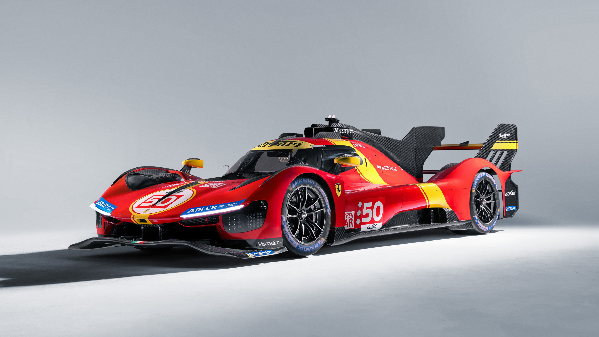

El Ferrari 499P
El Ferrari 499P es un prototipo de competición híbrido diseñado por Ferrari para participar en la categoría Hypercar del Campeonato Mundial de Resistencia (WEC). Combina un motor V6 biturbo de 3.0 litros con un sistema eléctrico de tracción total, ofreciendo una potencia máxima reglamentaria de unos 680 CV. Destaca por su aerodinámica avanzada, su tecnología híbrida y sus éxitos en las 24 Horas de Le Mans.

¿Cómo funciona el sistema?
MGU-K (Unidad Motor Generador - Cinético)
El MGU-K es el componente físico que se encarga de la conversión directa de la energía. Cuando el piloto pisa el freno, actúa como un generador que transforma la energía cinética (que normalmente se perdería en forma de calor en los discos de freno) en electricidad. Durante la aceleración, hace exactamente lo contrario: funciona como un motor eléctrico para enviar potencia adicional directamente a las ruedas delanteras del Ferrari 499P.

ERS (Sistema de Recuperación de Energía)
El ERS es el sistema completo que gestiona todo el ciclo de la energía híbrida. No es una sola pieza, sino el conjunto que incluye el MGU-K, la batería de alto voltaje y la centralita electrónica. Se encarga de coordinar la electricidad generada, almacenarla de forma segura y decidir de manera inteligente cuándo y cuánta de esa energía debe liberarse para impulsar el coche, optimizando el rendimiento y ahorrando combustible.